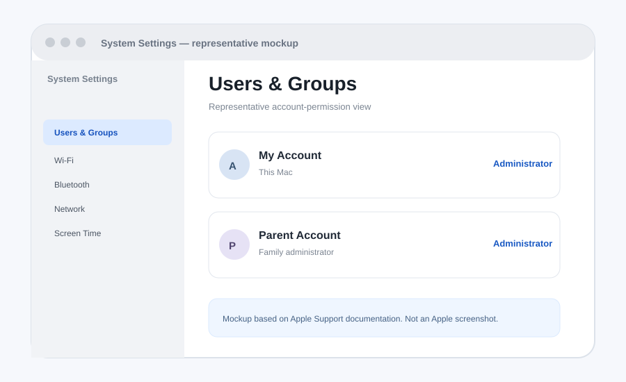
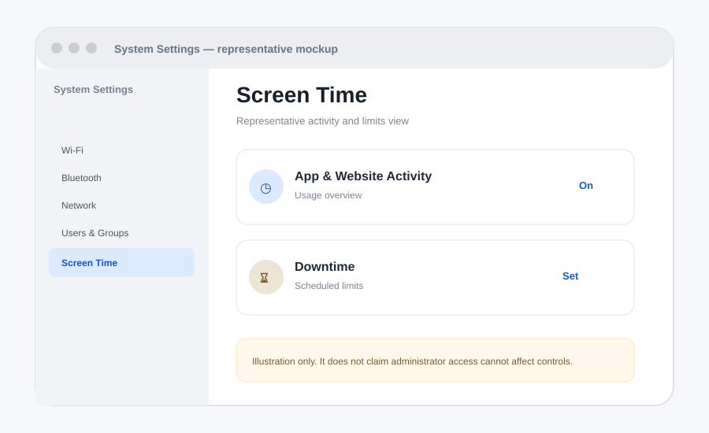
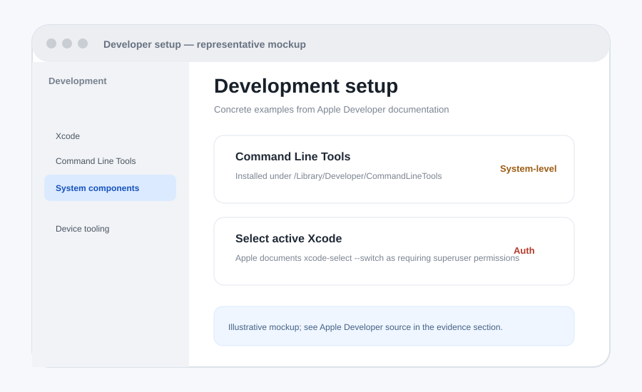

Medusa
Medusa is an Electron/React/TypeScript application with Python and Rust components. Its documented local development requirements include Node.js, Yarn, Python, and a Rust toolchain, with native-component builds and macOS packaging scripts.
I bought this Mac myself and use it as a serious development machine. I am asking for administrator access so I can manage legitimate system-level development work independently, while accepting that administrator access carries real responsibility.
This is the section I want you to read first.
Administrator access on my own Mac so I can manage the development environment without repeatedly needing someone else to approve system-level tasks.
I am not asking for permission to break family rules, create extra accounts to evade them, or pretend admin access is harmless.
These are narrow claims that can be verified from Apple or my repositories.
The projects themselves show why I am asking for a real development environment.
Medusa is an Electron/React/TypeScript application with Python and Rust components. Its documented local development requirements include Node.js, Yarn, Python, and a Rust toolchain, with native-component builds and macOS packaging scripts.
VEX is a native macOS Electron application using TypeScript/Vite, with ChatWise MCP integration, local AI tooling, macOS testing, and ARM64 DMG/ZIP packaging.
VEX's documented verification goes beyond a simple unit test: it checks packaging, ASAR contents, launch behavior, native executables, code-signing diagnostics, DMG/ZIP artifacts, and checksums. That is why I care about being able to manage the development machine itself.
This split is intentional: it keeps the argument technically honest.
.dmg requires admin.The strongest case is based on what Apple says, including the parts that support the concern about administrator access.
| Fact | What Apple documents | Why it matters |
|---|---|---|
| Some Mac tasks require admin authorization | Apple says certain Mac tasks require an administrator name and password. | A standard account can therefore create a real dependency on another person for legitimate system tasks. |
| Admin accounts have broader rights | Apple says administrators can add and manage users, install apps, and change settings. | This is the reason the request carries responsibility. |
| Standard accounts are narrower | Apple says standard users can install apps and change their own settings, but cannot manage other users. | The distinction is specifically about broader system administration. |
| Apple warns about child administrator accounts | Apple says a child with an administrator account can make changes affecting all accounts and recommends a standard account for parental-control safety. | I am not trying to prove this concern false. I am proposing rules and accountability for accepting that risk. |
| Development can use system-level tooling | Apple documents Command Line Tools at /Library/Developer/CommandLineTools and documents privileged developer operations such as xcode-select --switch. | This is a concrete development reason, not the blanket claim that all coding needs admin. |
These are original explanatory mockups, not official Apple screenshots.

Visual explanation of the account-type distinction discussed in Apple's documentation.
Source: Apple Support →
Shows the family-control context without claiming that the mockup proves bypass resistance.
Source: Apple Support →
Visualizes the kind of system-level development configuration discussed in Apple's developer documentation.
Source: Apple Developer →The goal is to separate technical administration from family rules while giving you a clear consequence for misuse.
Allow administrator access so I can manage the development environment on my Mac.
I will not create extra profiles for the purpose of getting around household rules.
I will not deliberately change Screen Time, Family Sharing, or other parental-control settings to defeat agreed limits.
The parent administrator password remains private. I am asking for account privileges, not someone else's password.
If I deliberately violate the agreement, administrator access can be removed or reconsidered.
“I am not asking you to ignore the risk. I am asking you to let me use the computer I bought as a real development machine, with evidence, clear rules, and a consequence if I abuse the privilege.”